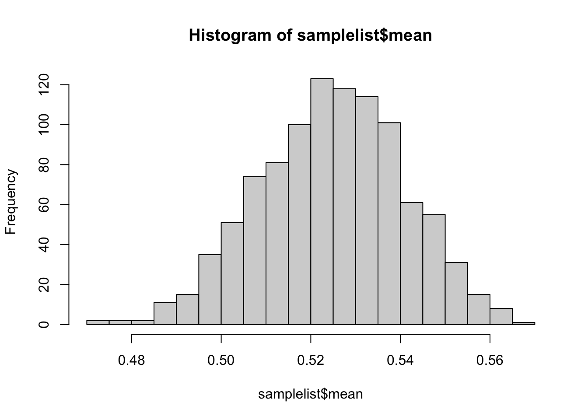

This lecture is going to serve as a basic primer to help students understand the role of theory and statistical methodology.
Theory
Models
Variables
Actors
Interests
Institutions
Statistics
Sampling
Confidence intervals
Substantive importance
Theory
“A logically consistent set of statements that explains a phenomenon of interest.” FLS, Glossary A-7
Theory is the story that we tell about how things work.
It describes the relationships between two or more variables
It can be used to predict outcomes
Models
Models are based on theory. They are simplistic representations of the phenomena we are trying to explain or understand.
Models can vary in complexity but are necessarily simplifications because the real world is too complex to replicate perfectly.
We often want to understand lots of different phenomena, so moving between models is also important.
Variables
What do we mean by variables?
Variables: The basic elements or moving parts of our model, the value of which changes across time or space.
I.e., they necessarily vary.
Actors
Actors are the people in our models who “do” things.
They are the players in the game
Interests
The things actors want
The goals they pursue
Institutions
The rules of the game
Can be formal or informal. Laws, norms, or other rules that structure how actors relate to one another and how processes unfold.
Note this is different than institutions in a purely organizational sense.
Statistics
Statistics is one tool that we use in the social sciences, but it is possible to conduct research without it. But this class will read a lot of material that uses stats so let’s get comfortable with some basics.
Sampling
This is one of the most important aspects of statistical work
We often don’t have data on, or can’t observe, the full population of cases.
The limited portion we observe and/or have data on is called the sample (think of an urn full of balls)
Public opinion surveys are another good example
Small samples present problems and may not be representative of the population about which we’re interested in drawing inferences.
library(tidyverse)# Set random number generator seed to ensure replicabilityset.seed(66502)# Simulate some data for populationvoters <-tibble(party =c(rep("Democrat", 105000), rep("Republican", 95000)))# Check the relative countstable(voters$party)
Democrat Republican
105000 95000
# Check the percentage percent <-sum(grepl("Democrat", voters$party))/length(voters$party)print(percent)
[1] 0.525
# Draw one from the populationsample.small <-sample(voters$party, size =1)print(sample.small)
# Now let's get a BIG samplesample.large <-sample(voters$party, size =1000)percent.large <-sum(grepl("Democrat", sample.large))/length(sample.large)print(percent.large)
[1] 0.509
# Now let's do that a lot!samplelist <-tibble(mean =rep(NA, 1000)) |>rowwise() |>mutate(mean = (sum(grepl("Democrat", sample(voters$party, size =1000)))/1000))# Show distribution of sample meanshist(samplelist$mean, breaks =30)

# Print the mean of the sampling meansprint(mean(samplelist$mean))
[1] 0.525237
Statistical significance and substantive significance.
Not an indicator of substantive importance
Technical definition: You take the ratio of the coefficient to the standard error to derive a \(z\) or \(t\) score and then use that score to position the coefficient/ratio on a normal or Student’s t distribution.
The p value is the probability of getting a ratio as big as or larger than the observed one if the data were generated at random.